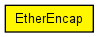

Performs Ethernet II encapsulation/decapsulation.
Expected environment:
Functionality:
The following diagram shows usage relationships between types. Unresolved types are missing from the diagram. Click here to see the full picture.

The following diagram shows inheritance relationships for this type. Unresolved types are missing from the diagram. Click here to see the full picture.
If a module type shows up more than once, that means it has been defined in more than one NED file.
| EthernetInterface (compound module) |
Ethernet network interface. Complements EtherMAC and EtherEncap with an output queue for QoS and RED support. |
| EthernetInterface2 (compound module) |
Ethernet network interface which supports full-duplex operation only. Complements EtherMAC2 and EtherEncap with an output queue for QoS and RED support. |
| EthernetInterfaceNoQueue (compound module) |
Ethernet network interface. Assumes inifinite queue. |
| Name | Value | Description |
|---|---|---|
| display | i=block/square |
| Name | Direction | Size | Description |
|---|---|---|---|
| upperLayerIn | input |
higher layer |
|
| upperLayerOut | output |
higher layer |
|
| lowerLayerIn | input |
to Ethernet MAC |
|
| lowerLayerOut | output |
to Ethernet MAC |
// // Performs Ethernet II encapsulation/decapsulation. // // Expected environment: // - lowerLayerIn, lowerLayerOut gates should be connected to Ethernet EtherMAC // - upperLayerIn, upperLayerOut gates should be connected to higher layer // protocol or application // // Functionality: // - packets coming from upper layers will be encapsulated in EthernetIIFrame // and sent to MAC. EtherType is taken from the Ieee802Ctrl structure attached // to the message as control info (see setControlInfo(), controlInfo() // methods). Src address will be filled in by EtherMAC. // - also accepts SENDPAUSE command (message kind=IEEE802CTRL_SENDPAUSE) from // higher layer: send PAUSE frame, as described in // <a href="ether-pause.html">PAUSE frames</a>. // - Ethernet frames arriving from MAC will be decapsulated, and sent up to the // higher layers. Accepts EtherFrameWithLLC and EtherFrameWithSNAP too. // simple EtherEncap { parameters: @display("i=block/square"); gates: input upperLayerIn @labels(Ieee802Ctrl/down); // higher layer output upperLayerOut @labels(Ieee802Ctrl/up); // higher layer input lowerLayerIn @labels(EtherFrame); // to Ethernet MAC output lowerLayerOut @labels(EtherFrame); // to Ethernet MAC }